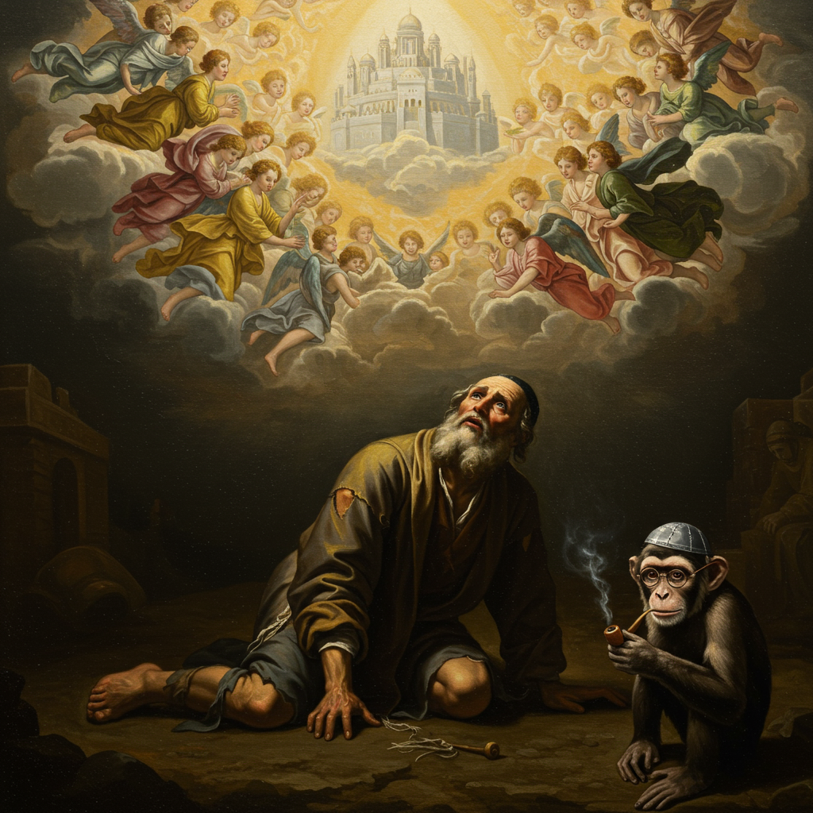

אִם אֶשְׁכָּחֵךְ יְרוּשָׁלִָם תִּשְׁכַּח יְמִינִי
תִּדְבַּק לְשׁוֹנִי לְחִכִּי אִם לֹא אֶזְכְּרֵכִי
מקור: תהילים קל"ז, ה'-ו'

מקור השבועה: קינה על נהרות בבל
המזמור נכתב מתוך כאב הגלות בבבל (586 לפנה"ס). שוביהם של הגולים דרשו מהם בלעג "שִׁירוּ לָנוּ מִשִּיר צִיּוֹן", והשבועה היא התשובה הנצחית לדרישה זו.
"עַל נַהֲרוֹת בָּבֶל שָׁם יָשַׁבְנוּ גַּם בָּכִינוּ בְּזָכְרֵנוּ אֶת צִיּוֹן... אֵיךְ נָשִׁיר אֶת שִׁיר ה' עַל אַדְמַת נֵכָר?" — תהילים קל"ז, א'-ד'
ניתוח השבועה: קללה עצמית מותנית
השבועה היא קללה עצמית שהאדם מטיל על עצמו אם יפר את התנאי. היא בנויה משני חלקים המשקפים אובדן מהותי של היכולת האנושית. לחצו כדי ללמוד עוד.
✋
"תִּשְׁכַּח יְמִינִי"
שיתוק היכולת המעשית
🗣️
"תִּדְבַּק לְשׁוֹנִי לְחִכִּי"
שיתוק יכולת הביטוי
בחר באחד ממרכיבי השבועה כדי לראות את פירושו.
שיא השבועה
"אִם לֹא אַעֲלֶה אֶת יְרוּשָׁלַיִם
עַל רֹאשׁ שִׂמְחָתִי"
זהו התנאי החיובי: לא רק להימנע משכחה, אלא למקם את זכר ירושלים בראש סדר העדיפויות הרגשי, אפילו ברגעי האושר הגדולים ביותר.
השבועה כסמל נצחי
במשך אלפי שנים, השבועה הפכה לסמל מרכזי בתרבות היהודית והישראלית. התרשים ממחיש את השפעתה בתחומים שונים.